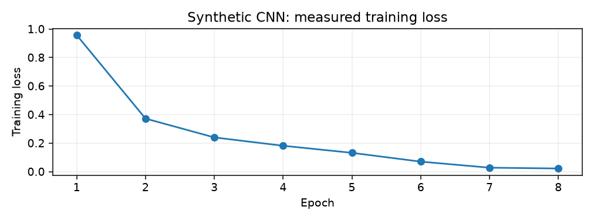
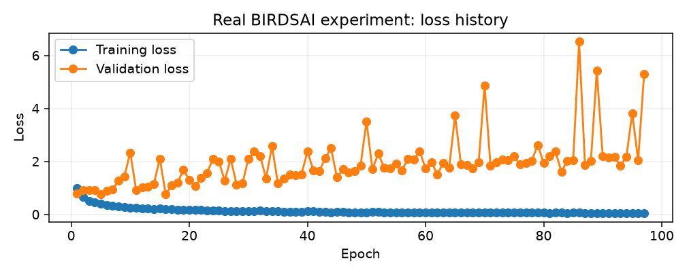
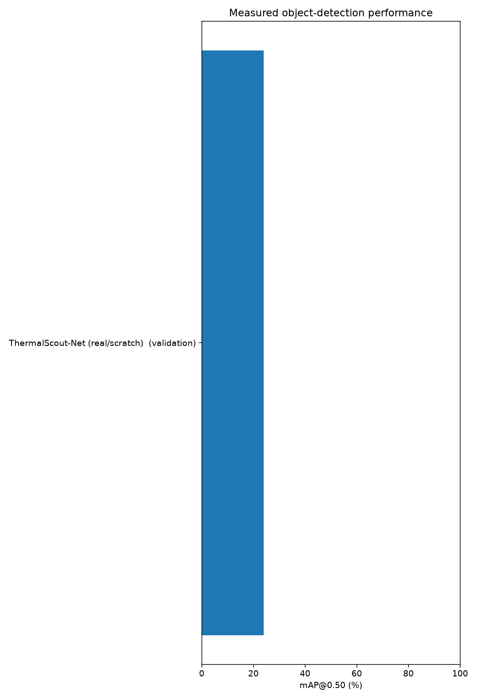
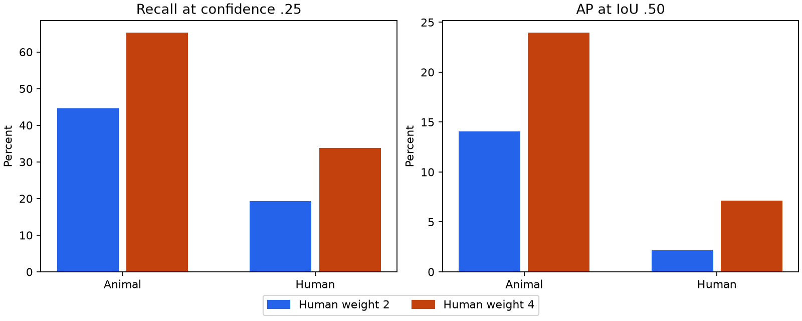

Course: COSC 2345 - Introduction to Artificial Intelligence
Application: conservation and potential anti-poaching support through thermal aerial object detection.
Report rebuilt locally: 2026-11-12 19:13
Status: Completed: scratch/focal development evaluations and controlled threshold analysis. In progress: improving human detection and background rejection.
The project designs and tests a custom convolutional neural network (CNN) to locate animals and people in infrared drone footage. A network learns visual representations from labeled images and predicts bounding boxes and classes. Research compares training from scratch, transfer learning, and YOLO11n. Hyperparameter search is a model-selection procedure and should not be confused with BFS or A* pathfinding.
| Date | Status | Milestone | Evidence / notes |
|---|---|---|---|
| 2026-10-28 | Complete | Custom CNN prototype | Implemented a 29,635-parameter CNN in Python/PyTorch. |
| 2026-10-28 | Complete | Synthetic training | Eight epochs; training loss 0.9574 to 0.0220; three objects detected in one synthetic demonstration. |
| 2026-10-28 | Complete | BIRDSAI dataset inspection | 32 source videos and 40,661 real frames identified; annotations matched to frames. |
| 2026-10-28 | Complete | Video-separated development export | 2,001 train images and 334 validation images; 26 train videos and 6 validation videos. |
| 2026-10-28 | Not started | Custom real-image training | Train a small anchor-free custom detector from random weights. |
| 2026-10-28 | Not started | Transfer-learning experiment | Compare custom detector with pretrained feature extraction. |
| 2026-10-28 | Not started | YOLO11n baseline | Fine-tune a pretrained object detector on the same split. |
| 2026-10-28 | Not started | Held-out evaluation | Compute class-specific precision/recall, mAP@.50, mAP@.50:.95, and FPS. |
- Original TrainReal: 32 sequences; 40,661 images; 74,668 animal annotations; 12,531 human annotations.
- Prepared development split: 26 train videos (2,001 images, 6,691 animal and 1,090 human labels); 6 validation videos (334 images, 954 animal and 62 human labels).
- Videos are split by sequence (not by adjacent image) to reduce data leakage.
- Official TestReal held out; not used for training or validation.
- The small validation sample has only 62 human labels: human recall will have high uncertainty.
- Custom trainable parameters: 29,635. Trained 8 epochs on synthetic shapes.
- Training loss: 0.9574 -> 0.0220.
- A single illustrated synthetic scene had 3/3 objects detected.
- This is not a real-footage precision, recall, mAP, or generalization result.
| Timestamp | Model | Mode | Epochs | Final train loss | Best val loss |
|---|---|---|---|---|---|
| 2026-10-29T12:48:01 | ThermalScout-Net (real/scratch) | quick | 2 | 1.23 | 1.51 |
| 2026-10-29T12:50:13 | ThermalScout-Net (real/scratch) | quick | 2 | 1.23 | 1.51 |
| 2026-10-29T13:39:12 | ThermalScout-Net (real/scratch) | full | 10 | 0.27 | 0.71 |
| 2026-11-02T11:48:00 | ThermalScout-Net (real/scratch) | quick | 2 | 1.23 | 1.51 |
| 2026-11-02T11:49:17 | ThermalScout-Net (real/scratch) | quick | 2 | 1.23 | 1.51 |
| 2026-11-02T11:49:17 | ThermalScout-Net (real/scratch) | quick | 2 | 1.23 | 1.51 |
| 2026-11-02T11:49:17 | ThermalScout-Net (real/scratch) | full | 10 | 0.27 | 0.71 |
| 2026-11-02T11:49:17 | ThermalScout-Net (real/scratch) | full | 10 | 0.25 | 0.60 |
| 2026-11-02T12:42:03 | ThermalScout-Net (real/scratch) | full-control | 10 | 0.27 | 0.71 |
| 2026-11-02T12:42:03 | ThermalScout-Net (real/scratch) | full-human4 | 10 | 0.30 | 0.72 |
| 2026-11-09T00:04:29 | ThermalScout-Net (real/scratch) | human4-hit-uav-mix | 10 | 0.39 | 0.56 |
| 2026-11-09T00:04:29 | ThermalScout-Net (real/scratch) | human4-birdsai-people-mix | 10 | 0.25 | 0.86 |
| 2026-11-10T02:39:29 | ThermalScout-Net (real/scratch) | thermal-pretraining | 10 | 0.31 | 0.67 |
| 2026-11-10T20:26:20 | ThermalScout-Net (real/scratch) | quick | 2 | 1.23 | 1.51 |
| 2026-11-10T23:25:30 | ThermalScout-Net (real/scratch) | quick | 2 | 1.23 | 2.05 |
| 2026-11-11T19:03:40 | ThermalScout-Net (real/scratch) | quick | 2 | 1.24 | 1.52 |
| 2026-11-12T03:13:48 | ThermalScout-Net (real/scratch) | full | 9 | 0.30 | 0.50 |
| 2026-11-12T03:13:55 | ThermalScout-Net (real/scratch) | full | 97 | 0.05 | 0.76 |
| 2026-11-12T15:23:10 | ThermalScout-Net (real/scratch) | full | 549 | 0.04 | 0.50 |
| 2026-11-12T19:13:12 | ThermalScout-Net (real/scratch) | full | 10 | 0.28 | 0.56 |
| 2026-11-12T19:13:13 | ThermalScout-Net (real/scratch) | full | 6 | 0.39 | 0.60 |
| 2026-11-12T19:13:14 | ThermalScout-Net (real/scratch) | full | 8 | 0.34 | 0.50 |


| Model | Training | Split | Precision | Recall | mAP@.50 | mAP@.50:.95 | FPS | Evidence |
|---|---|---|---|---|---|---|---|---|
| ThermalScout-Net (real/scratch) (quick) | random initialization | validation | 0.1% | 1.7% | 0.0% | 0.0% | 6.66 | E:\College Work\Intro To AI\Intro to AI project\ThermalScout-Net_GitHub_Ready\ThermalScout-Net\training_runs\20261029_124654_quick\evaluation.json |
| ThermalScout-Net (real/scratch) (quick) — animal | random initialization | validation | 0.1% | 1.6% | 0.0% | 0.0% | Not measured | E:\College Work\Intro To AI\Intro to AI project\ThermalScout-Net_GitHub_Ready\ThermalScout-Net\training_runs\20261029_124654_quick\evaluation.json #class=animal |
| ThermalScout-Net (real/scratch) (quick) — human | random initialization | validation | 0.2% | 3.2% | 0.0% | 0.0% | Not measured | E:\College Work\Intro To AI\Intro to AI project\ThermalScout-Net_GitHub_Ready\ThermalScout-Net\training_runs\20261029_124654_quick\evaluation.json #class=human |
| ThermalScout-Net (real/scratch) (full) | random initialization | validation | 3.3% | 43.1% | 8.1% | 2.4% | 7.15 | E:\College Work\Intro To AI\Intro to AI project\ThermalScout-Net_GitHub_Ready\ThermalScout-Net\training_runs\20261029_125035_full\evaluation.json |
| ThermalScout-Net (real/scratch) (full) — animal | random initialization | validation | 3.2% | 44.7% | 14.1% | 4.4% | Not measured | E:\College Work\Intro To AI\Intro to AI project\ThermalScout-Net_GitHub_Ready\ThermalScout-Net\training_runs\20261029_125035_full\evaluation.json #class=animal |
| ThermalScout-Net (real/scratch) (full) — human | random initialization | validation | 6.0% | 19.4% | 2.2% | 0.5% | Not measured | E:\College Work\Intro To AI\Intro to AI project\ThermalScout-Net_GitHub_Ready\ThermalScout-Net\training_runs\20261029_125035_full\evaluation.json #class=human |
| ThermalScout-Net (real/scratch) (full) | random initialization | validation | 3.3% | 43.1% | 8.1% | 2.4% | 7.11 | E:\College Work\Intro To AI\Intro to AI project\ThermalScout-Net_GitHub_Ready\ThermalScout-Net\training_runs\20261029_133235_full\evaluation.json |
| ThermalScout-Net (real/scratch) (full) — animal | random initialization | validation | 3.2% | 44.7% | 14.1% | 4.4% | Not measured | E:\College Work\Intro To AI\Intro to AI project\ThermalScout-Net_GitHub_Ready\ThermalScout-Net\training_runs\20261029_133235_full\evaluation.json #class=animal |
| ThermalScout-Net (real/scratch) (full) — human | random initialization | validation | 6.0% | 19.4% | 2.2% | 0.5% | Not measured | E:\College Work\Intro To AI\Intro to AI project\ThermalScout-Net_GitHub_Ready\ThermalScout-Net\training_runs\20261029_133235_full\evaluation.json #class=human |
| ThermalScout-Net (real/scratch) (full) | random initialization | validation | 3.3% | 43.4% | 9.0% | 2.1% | 20.65 | D:\College Work\Intro To AI\Intro to AI project\ThermalScout-Net_GitHub_Ready\ThermalScout-Net\training_runs\20261029_focal_experiment\evaluation.json |
| ThermalScout-Net (real/scratch) (full) — animal | random initialization | validation | 3.3% | 45.8% | 17.7% | 4.1% | Not measured | D:\College Work\Intro To AI\Intro to AI project\ThermalScout-Net_GitHub_Ready\ThermalScout-Net\training_runs\20261029_focal_experiment\evaluation.json #class=animal |
| ThermalScout-Net (real/scratch) (full) — human | random initialization | validation | 3.3% | 6.5% | 0.2% | 0.0% | Not measured | D:\College Work\Intro To AI\Intro to AI project\ThermalScout-Net_GitHub_Ready\ThermalScout-Net\training_runs\20261029_focal_experiment\evaluation.json #class=human |
| ThermalScout-Net (real/scratch) (quick) | random initialization | validation | 0.1% | 1.7% | 0.0% | 0.0% | 20.14 | D:\College Work\Intro To AI\Intro to AI project\ThermalScout-Net_GitHub_Ready\ThermalScout-Net\training_runs\20261102_114742_quick\evaluation.json |
| ThermalScout-Net (real/scratch) (quick) — animal | random initialization | validation | 0.1% | 1.6% | 0.0% | 0.0% | Not measured | D:\College Work\Intro To AI\Intro to AI project\ThermalScout-Net_GitHub_Ready\ThermalScout-Net\training_runs\20261102_114742_quick\evaluation.json #class=animal |
| ThermalScout-Net (real/scratch) (quick) — human | random initialization | validation | 0.2% | 3.2% | 0.0% | 0.0% | Not measured | D:\College Work\Intro To AI\Intro to AI project\ThermalScout-Net_GitHub_Ready\ThermalScout-Net\training_runs\20261102_114742_quick\evaluation.json #class=human |
| ThermalScout-Net (real/scratch) (full-control) | random initialization | validation | 3.3% | 43.1% | 8.1% | 2.4% | 20.53 | D:\College Work\Intro To AI\Intro to AI project\ThermalScout-Net_GitHub_Ready\ThermalScout-Net\training_runs\20261102_classweight_control\evaluation.json |
| ThermalScout-Net (real/scratch) (full-control) — animal | random initialization | validation | 3.2% | 44.7% | 14.1% | 4.4% | Not measured | D:\College Work\Intro To AI\Intro to AI project\ThermalScout-Net_GitHub_Ready\ThermalScout-Net\training_runs\20261102_classweight_control\evaluation.json #class=animal |
| ThermalScout-Net (real/scratch) (full-control) — human | random initialization | validation | 6.0% | 19.4% | 2.2% | 0.5% | Not measured | D:\College Work\Intro To AI\Intro to AI project\ThermalScout-Net_GitHub_Ready\ThermalScout-Net\training_runs\20261102_classweight_control\evaluation.json #class=human |
| ThermalScout-Net (real/scratch) (full-human4) | random initialization | validation | 5.0% | 63.4% | 15.5% | 3.7% | 19.88 | D:\College Work\Intro To AI\Intro to AI project\ThermalScout-Net_GitHub_Ready\ThermalScout-Net\training_runs\20261102_classweight_human4\evaluation.json |
| ThermalScout-Net (real/scratch) (full-human4) — animal | random initialization | validation | 5.0% | 65.3% | 24.0% | 6.1% | Not measured | D:\College Work\Intro To AI\Intro to AI project\ThermalScout-Net_GitHub_Ready\ThermalScout-Net\training_runs\20261102_classweight_human4\evaluation.json #class=animal |
| ThermalScout-Net (real/scratch) (full-human4) — human | random initialization | validation | 4.1% | 33.9% | 7.1% | 1.3% | Not measured | D:\College Work\Intro To AI\Intro to AI project\ThermalScout-Net_GitHub_Ready\ThermalScout-Net\training_runs\20261102_classweight_human4\evaluation.json #class=human |
| ThermalScout-Net (real/scratch) (human4-hit-uav-mix) | random initialization | validation | 3.3% | 43.0% | 6.5% | 1.2% | 17.29 | D:\College Work\Intro To AI\Intro to AI project\ThermalScout-Net_GitHub_Ready\ThermalScout-Net\records\experiments\20261108_dataset_mix\20261108_hit_uav_mix\evaluation.json |
| ThermalScout-Net (real/scratch) (human4-hit-uav-mix) — animal | random initialization | validation | 3.5% | 45.3% | 13.0% | 2.4% | Not measured | D:\College Work\Intro To AI\Intro to AI project\ThermalScout-Net_GitHub_Ready\ThermalScout-Net\records\experiments\20261108_dataset_mix\20261108_hit_uav_mix\evaluation.json #class=animal |
| ThermalScout-Net (real/scratch) (human4-hit-uav-mix) — human | random initialization | validation | 0.4% | 8.1% | 0.0% | 0.0% | Not measured | D:\College Work\Intro To AI\Intro to AI project\ThermalScout-Net_GitHub_Ready\ThermalScout-Net\records\experiments\20261108_dataset_mix\20261108_hit_uav_mix\evaluation.json #class=human |
| ThermalScout-Net (real/scratch) (human4-birdsai-people-mix) | random initialization | validation | 2.0% | 26.5% | 2.7% | 0.4% | 20.36 | D:\College Work\Intro To AI\Intro to AI project\ThermalScout-Net_GitHub_Ready\ThermalScout-Net\records\experiments\20261108_dataset_mix\20261108_birdsai_people_mix\evaluation.json |
| ThermalScout-Net (real/scratch) (human4-birdsai-people-mix) — animal | random initialization | validation | 2.1% | 26.5% | 3.8% | 0.6% | Not measured | D:\College Work\Intro To AI\Intro to AI project\ThermalScout-Net_GitHub_Ready\ThermalScout-Net\records\experiments\20261108_dataset_mix\20261108_birdsai_people_mix\evaluation.json #class=animal |
| ThermalScout-Net (real/scratch) (human4-birdsai-people-mix) — human | random initialization | validation | 1.2% | 25.8% | 1.5% | 0.3% | Not measured | D:\College Work\Intro To AI\Intro to AI project\ThermalScout-Net_GitHub_Ready\ThermalScout-Net\records\experiments\20261108_dataset_mix\20261108_birdsai_people_mix\evaluation.json #class=human |
| ThermalScout-Net (real/pretrained) (thermal-pretraining) | thermal patch pretraining | validation | 3.1% | 40.7% | 6.7% | 1.6% | 17.06 | D:\College Work\Intro To AI\Intro to AI project\ThermalScout-Net_GitHub_Ready\ThermalScout-Net\records\experiments\20261110_thermal_pretraining\evaluation.json |
| ThermalScout-Net (real/pretrained) (thermal-pretraining) — animal | thermal patch pretraining | validation | 3.1% | 42.8% | 12.9% | 3.2% | Not measured | D:\College Work\Intro To AI\Intro to AI project\ThermalScout-Net_GitHub_Ready\ThermalScout-Net\records\experiments\20261110_thermal_pretraining\evaluation.json #class=animal |
| ThermalScout-Net (real/pretrained) (thermal-pretraining) — human | thermal patch pretraining | validation | 2.3% | 9.7% | 0.5% | 0.1% | Not measured | D:\College Work\Intro To AI\Intro to AI project\ThermalScout-Net_GitHub_Ready\ThermalScout-Net\records\experiments\20261110_thermal_pretraining\evaluation.json #class=human |
| ThermalScout-Net (real/scratch) (full) | random initialization | validation | 5.4% | 70.3% | 29.1% | 6.3% | 20.66 | D:\College Work\Intro To AI\Intro to AI project\ThermalScout-Net_GitHub_Ready\ThermalScout-Net\training_runs\20261112_resolution512_human4\evaluation.json |
| ThermalScout-Net (real/scratch) (full) — animal | random initialization | validation | 5.2% | 71.6% | 22.9% | 4.5% | Not measured | D:\College Work\Intro To AI\Intro to AI project\ThermalScout-Net_GitHub_Ready\ThermalScout-Net\training_runs\20261112_resolution512_human4\evaluation.json #class=animal |
| ThermalScout-Net (real/scratch) (full) — human | random initialization | validation | 36.9% | 50.0% | 35.3% | 8.2% | Not measured | D:\College Work\Intro To AI\Intro to AI project\ThermalScout-Net_GitHub_Ready\ThermalScout-Net\training_runs\20261112_resolution512_human4\evaluation.json #class=human |
| ThermalScout-Net (real/scratch) (full) | random initialization | validation | 4.0% | 52.0% | 7.1% | 1.5% | 17.60 | D:\College Work\Intro To AI\Intro to AI project\ThermalScout-Net_GitHub_Ready\ThermalScout-Net\training_runs\20261112_025045_full\evaluation.json |
| ThermalScout-Net (real/scratch) (full) — animal | random initialization | validation | 4.0% | 54.6% | 12.7% | 2.7% | Not measured | D:\College Work\Intro To AI\Intro to AI project\ThermalScout-Net_GitHub_Ready\ThermalScout-Net\training_runs\20261112_025045_full\evaluation.json #class=animal |
| ThermalScout-Net (real/scratch) (full) — human | random initialization | validation | 8.5% | 11.3% | 1.6% | 0.3% | Not measured | D:\College Work\Intro To AI\Intro to AI project\ThermalScout-Net_GitHub_Ready\ThermalScout-Net\training_runs\20261112_025045_full\evaluation.json #class=human |
| ThermalScout-Net (real/scratch) (full) | random initialization | validation | 4.6% | 60.3% | 12.0% | 2.8% | 20.74 | D:\College Work\Intro To AI\Intro to AI project\ThermalScout-Net_GitHub_Ready\ThermalScout-Net\training_runs\20261112_132439_full\evaluation.json |
| ThermalScout-Net (real/scratch) (full) — animal | random initialization | validation | 4.5% | 61.7% | 21.0% | 4.7% | Not measured | D:\College Work\Intro To AI\Intro to AI project\ThermalScout-Net_GitHub_Ready\ThermalScout-Net\training_runs\20261112_132439_full\evaluation.json #class=animal |
| ThermalScout-Net (real/scratch) (full) — human | random initialization | validation | 7.2% | 38.7% | 2.9% | 0.9% | Not measured | D:\College Work\Intro To AI\Intro to AI project\ThermalScout-Net_GitHub_Ready\ThermalScout-Net\training_runs\20261112_132439_full\evaluation.json #class=human |
| ThermalScout-Net (real/scratch) (full) | random initialization | validation | 4.6% | 59.9% | 11.4% | 3.0% | 28.14 | D:\College Work\Intro To AI\Intro to AI project\ThermalScout-Net_GitHub_Ready\ThermalScout-Net\training_runs\20261112_monet200_512\evaluation.json |
| ThermalScout-Net (real/scratch) (full) — animal | random initialization | validation | 4.5% | 61.5% | 19.4% | 5.4% | Not measured | D:\College Work\Intro To AI\Intro to AI project\ThermalScout-Net_GitHub_Ready\ThermalScout-Net\training_runs\20261112_monet200_512\evaluation.json #class=animal |
| ThermalScout-Net (real/scratch) (full) — human | random initialization | validation | 6.9% | 35.5% | 3.4% | 0.6% | Not measured | D:\College Work\Intro To AI\Intro to AI project\ThermalScout-Net_GitHub_Ready\ThermalScout-Net\training_runs\20261112_monet200_512\evaluation.json #class=human |
| ThermalScout-Net (real/scratch) (full) | random initialization | validation | 4.3% | 56.0% | 7.8% | 1.8% | 22.27 | D:\College Work\Intro To AI\Intro to AI project\ThermalScout-Net_GitHub_Ready\ThermalScout-Net\training_runs\20261112_wageningen200_512\evaluation.json |
| ThermalScout-Net (real/scratch) (full) — animal | random initialization | validation | 4.2% | 57.2% | 9.3% | 1.7% | Not measured | D:\College Work\Intro To AI\Intro to AI project\ThermalScout-Net_GitHub_Ready\ThermalScout-Net\training_runs\20261112_wageningen200_512\evaluation.json #class=animal |
| ThermalScout-Net (real/scratch) (full) — human | random initialization | validation | 7.0% | 37.1% | 6.3% | 1.9% | Not measured | D:\College Work\Intro To AI\Intro to AI project\ThermalScout-Net_GitHub_Ready\ThermalScout-Net\training_runs\20261112_wageningen200_512\evaluation.json #class=human |
| ThermalScout-Net (real/scratch) (full) | random initialization | validation | 3.9% | 51.9% | 13.5% | 3.4% | 18.74 | D:\College Work\Intro To AI\Intro to AI project\ThermalScout-Net_GitHub_Ready\ThermalScout-Net\training_runs\20261112_monet200_wageningen200_512\evaluation.json |
| ThermalScout-Net (real/scratch) (full) — animal | random initialization | validation | 3.9% | 53.8% | 19.5% | 4.8% | Not measured | D:\College Work\Intro To AI\Intro to AI project\ThermalScout-Net_GitHub_Ready\ThermalScout-Net\training_runs\20261112_monet200_wageningen200_512\evaluation.json #class=animal |
| ThermalScout-Net (real/scratch) (full) — human | random initialization | validation | 14.7% | 22.6% | 7.5% | 2.0% | Not measured | D:\College Work\Intro To AI\Intro to AI project\ThermalScout-Net_GitHub_Ready\ThermalScout-Net\training_runs\20261112_monet200_wageningen200_512\evaluation.json #class=human |

Interpretation: Lower training loss does not establish higher object-detection accuracy. Only enter precision, recall, mAP, and FPS after running the same evaluation protocol on an appropriate held-out split.
- Human annotations are less common than animal annotations.
- People are often only a few pixels wide; some objects are ambiguous.
- The first custom detector uses one prediction per grid cell and can miss crowded targets.
- Prototype output may show detection boxes before trustworthy benchmark metrics exist.
1. Review the checkpoint audit and controlled threshold experiment in section 11.
2. Inspect ground truth versus predictions and review the training/validation losses.
3. Run a larger scratch-training experiment and record its settings and limitations.
4. Use the existing class-wise IoU-matched evaluator and compare human recall as well as aggregate mAP.
5. Train a controlled transfer-learning model and a YOLO11n baseline on the same data.
6. Report unbiased final metrics only after the official test set is evaluated.
COSC 2345 covers intelligent systems, search and heuristics, uncertainty, supervised learning, artificial neural networks, and responsible AI. This project emphasizes supervised learning and CNN-based perception, while using controlled model selection and evidence-based evaluation.
Run py -3.12 project_manager.py update after each experiment or add milestones with py -3.12 project_manager.py note --title "..." --detail "...". The files in this project folder update when you execute the command; nothing runs in the background.
Frozen checkpoint: 20261029_focal_experiment, epoch 7. All 334 development validation frames were evaluated on CPU without retraining. Official TestReal was not used. Training and inference defaults remain unchanged.
| Operating rule (animal / human confidence) | Precision | Recall | F1 | TP | FP | Human TP / labels |
|---|---|---|---|---|---|---|
| Baseline .25 / .25 | 3.30% | 43.41% | 6.14% | 441 | 12,919 | 4 / 62 |
| Global .99 / .99 | 32.44% | 25.10% | 28.30% | 255 | 531 | 0 / 62 |
| Human-preserving .99 / .25 | 28.52% | 25.49% | 26.92% | 259 | 649 | 4 / 62 |
The class-specific rule removes 94.98% of baseline false positives but loses 182 true positives. It preserves only the focal checkpoint's already-low 6.45% human recall; it does not restore the baseline-trained model's 19.35% human recall. These are validation-selected operating points, not model improvements or unbiased test results. Do not install either rule as a new default from this experiment alone.
Control and selection. Generated predictions once at confidence .001, then filtered the retained boxes at 20 thresholds (.001 through 1.0). IoU .50, top 500 candidates, classwise NMS at .50, and 40 detections/image were fixed. Baseline aggregate precision/recall and per-class TP/FP/GT exactly reproduced the original evaluation. The global rule maximizes validation micro F1 over the tested grid. The guarded rule maximizes that score with human confidence fixed at .25. Animal prevalence dominates micro F1. AP/mAP was not recalculated as an operating-point improvement: filtering ranked outputs does not demonstrate improved learned ranking. No speed comparison was made.
Checkpoint audit. The full folders 20261029_125035_full and 20261029_133235_full contain byte-identical checkpoint files and identical model tensors. The earlier folder lacks a loss-history CSV, so they cannot establish two independent completed training experiments. All three quick folders (20261029_124654_quick, 20261029_124946_quick, 20261102_114742_quick) have identical model tensors and loss histories. The two October files are byte-identical; November has different serialization metadata but the same learned state. Fixed seed 42 and identical quick settings can reproduce these weights; hashes alone cannot prove copying versus rerunning. The focal weights differ from all baseline and quick weights. Different FPS values do not establish different models.
The training log also contains repeated entries for the same run/history when the drive changed from E: to D:. Historical records were preserved. Registration now recognizes a matching run ID and history hash across relocated paths, preventing additional relocation duplicates. Existing totals are counts of log entries, not unique trained models. Original metrics use generic full/quick names; identify the experiment using its evidence folder.
Diagnosis. Of 12,919 focal false positives, overlap heuristics classify 11,627 as background-like, 1,175 localization-like, 92 duplicates and 25 wrong-class. These categories describe overlap with annotations, not visually confirmed causes. Duplicate suppression is not the dominant measured error. Code inspection shows background objectness loss is averaged separately and multiplied by .25; focal loss further downweights easy negatives. Poor background rejection/calibration is a plausible explanation, not established causation. Many false positives survive high confidence.
Training has 6,691 animal versus 1,090 human labels; validation has 954 versus 62. Class loss already weights humans by 2, so missing weighting alone is not the diagnosis. One box per stride-4 cell, first-label wins on collisions, small resized targets, argmax-only class predictions, and the shared 500-candidate/40-output caps can constrain human detection. The sweep cannot recover human boxes excluded upstream. Inspect label alignment, annotation coverage, object sizes and cap occupancy before changing training. The focal run's 4/62 human detections versus baseline 12/62 argues against selecting it solely for aggregate mAP. Per-class results and repeated controlled training seeds are needed for the next comparison.
Evidence. [Summary and provenance](../records/experiments/20261102_focal_threshold_sweep/summary.json), [threshold metrics](../records/experiments/20261102_focal_threshold_sweep/thresholds.csv), [class-specific policies](../records/experiments/20261102_focal_threshold_sweep/class_policies.csv), [checkpoint fingerprints](../records/experiments/20261102_focal_threshold_sweep/checkpoint_audit.json), and [validation input hashes](../records/experiments/20261102_focal_threshold_sweep/dataset_manifest.json). The summary records Python/library versions, source hashes, checkpoint hash and prediction hash. Cached predictions and BIRDSAI diagnostic images remain local and Git-ignored.
Reproduce from the repository root. Use Python 3.12 with the project's installed dependencies. Choose a fresh output directory; explicit --out refuses overwriting an existing directory.
```powershell
py -3.12 -u -m scripts.analyze_validation --run training_runs/20261029_focal_experiment --data data/processed/yolo_real --out training_runs/threshold_repeat_01
py -3.12 -m pytest tests -q
py -3.12 project_manager.py update
ii .\report\Living_Project_Report.html
```
The analysis writes thresholds.csv, class_policies.csv, summary.json, checkpoint_audit.json, dataset_manifest.json, the prediction cache, tradeoff plot and diagnostic images. Compare prediction hashes and counts against the saved evidence. Keep the checkpoint/data/source versions fixed. The living report includes this document each time it rebuilds, so the findings persist. Earlier analysis behavior without --out remains available. No retraining is needed for this experiment.
Validation completed: Two full inference passes produced identical prediction hashes and selected metrics. Independently applying the class thresholds reproduced 259 TP / 649 FP and 4 human TP. All eight tests passed, including relocated-history registration and class filtering. Both Markdown and HTML reports were rebuilt and checked for the experiment table.
Inspected frozen baseline and focal prediction caches on the same 334 development validation images. No retraining or defaults changed; official TestReal was not accessed. Names and letterbox-adjusted labels were checked against the current dataset, all input bytes fingerprinted, and baseline aggregate precision/recall plus class TP/FP/GT reproduced against saved evaluations.
At confidence .25 and IoU .50, compare the original retained predictions with two fixed rules: remove centers outside the exact letterboxed content rectangle, or remove centers outside that rectangle inset by four pixels on all sides at input size 256. The latter excludes real image content, including legitimate edge objects; it is a diagnostic ablation, not a recommended default. Four pixels was fixed before measuring this band, with no margin sweep.
| Model / rule | TP | FP | Precision | Recall | Human TP / 62 |
|---|---|---|---|---|---|
| Focal / original | 441 | 12,919 | 3.30% | 43.41% | 4 |
| Focal / outside padding only | 441 | 12,911 | 3.30% | 43.41% | 4 |
| Focal / four-pixel boundary band | 439 | 6,193 | 6.62% | 43.21% | 4 |
| Baseline / original | 438 | 12,880 | 3.29% | 43.11% | 12 |
| Baseline / outside padding only | 438 | 12,878 | 3.29% | 43.11% | 12 |
| Baseline / four-pixel boundary band | 434 | 11,624 | 3.60% | 42.72% | 12 |
The focal boundary band removes 6,726 FP (52.06%) and two TP. Baseline loses 1,256 FP and four TP. Only eight focal FP centers are outside content: the visible boundary artifact is mainly just inside image content, not in the padding itself. All 1,016 label centers are inside content. This check does not establish full annotation alignment/coverage. After filtering, many false positives remain. The difference between models supports investigating focal loss and boundary features but does not establish causation. Filtering after the existing 500-candidate and 40-output caps cannot recover excluded detections; AP and speed were not measured.
For each human label, inspect retained predictions at confidence .25 and overlap IoU .50, independent of one-to-one matching:
| Model | Human-class overlap | Animal-only overlap | Neither class at .50 | Any-class overlap at .10 |
|---|---|---|---|---|
| Focal | 4 | 17 | 41 | 59 |
| Baseline | 12 | 10 | 40 | 62 |
Animal-only means at least one overlapping animal prediction and no overlapping human prediction. These are label-wise diagnostic counts, not mutually exclusive prediction assignments or proof that reclassifying animal boxes would recover every label. The .10 column overlaps the other categories. Both classification and localization/missing-candidate behavior matter. The caches cannot reveal the human alternative class score discarded by argmax or detections dropped upstream. Boundary removal does not recover any additional humans.
The two example frames are adjacent and intentionally human-heavy; they are not independent representative samples. In the new comparison, columns are labels, original predictions at .25, outside-padding filter at .25, and four-pixel boundary filter at .25. Blue is human and green is animal. Images remain Git-ignored under training_runs/20261102_focal_boundary_final/human_padding_comparison.png.
Retain the original baseline as the human-detection reference. Do not replace defaults with the boundary crop or declare the focal model superior. A useful next controlled training experiment would vary class loss weight alone against baseline objectness, holding seed, data, image size, optimizer and budget fixed. Inspect human/animal box sizes and annotation mapping first; the existing human weight is already 2. Treat background rejection as a separate subsequent change. Compare both class AP and precision/recall, and report edge-object losses. This diagnostic experiment did not train a new model.
Run from the repository root. Use a fresh output folder each time:
```powershell
py -3.12 -m scripts.diagnose_padding --cache records/experiments/20261102_focal_threshold_sweep/predictions.json --checkpoint training_runs/20261029_focal_experiment/thermal_scout_real_weights.pt --out training_runs/my_boundary_check
py -3.12 -m pytest tests -q
py -3.12 project_manager.py update
ii .\training_runs\my_boundary_check\human_padding_comparison.png
```
For baseline, use cache training_runs/20261029_133235_full/error_analysis/predictions.json and checkpoint training_runs/20261029_133235_full/thermal_scout_real_weights.pt. If a cache is missing, regenerate it with scripts/analyze_validation.py for that checkpoint first. This analysis uses the existing frozen caches; it does not independently regenerate model outputs or prove a cache/checkpoint association beyond reproducing saved metrics and recording their hashes.
[Focal evidence](../records/experiments/20261102_boundary_diagnosis/focal_summary.json) and [baseline evidence](../records/experiments/20261102_boundary_diagnosis/baseline_summary.json) include exact counts and checkpoint, source, cache and current dataset hashes. Ten tests passed, including content-rectangle boundaries and human-versus-animal overlap categories. Analysis reruns reproduced the same counts. Report section 12 persists on rebuild.
Tested human class weight 2 (existing default) versus 4 with animal weight fixed at 1. Both runs trained from scratch on CPU with seed 42, baseline objectness, size 256, batch 4, AdamW learning rate .001, weight decay .0001 and ten epochs. Same 2,001 training images and 334 video-separated validation images; no TestReal access. Architecture, augmentation, losses other than class weight, inference and thresholds stayed fixed. Full saved configuration comparison verified only class weight and output identity differ.
| Experiment | Selected epoch | Precision | Recall | mAP50 | mAP50:95 | Human TP/GT | Human precision | Human AP50 | Animal AP50 |
|---|---|---|---|---|---|---|---|---|---|
| control (human weight 2) | 7 | 3.29% | 43.11% | 8.11% | 2.44% | 12/62 | 6.03% | 2.15% | 14.07% |
| human4 (human weight 4) | 7 | 4.95% | 63.39% | 15.54% | 3.70% | 21/62 | 4.09% | 7.11% | 23.97% |
Human detections changed by +9 out of 62 labels. Human recall rose from 19.35% to 33.87%, but human false positives rose from 187 to 492. Keep the existing default; this single-seed result is insufficient to adopt the variant.

View the same two human-heavy frames with py -3.12 -m scripts.preview_class_weight, then ii .\training_runs\20261102_classweight_comparison.png. Columns show labels, the weight-2 control and the weight-4 variant, all at confidence .25. Blue is human; green is animal. These adjacent, deliberately selected frames are illustrative, not representative accuracy evidence.
Checkpoint selection uses each run's minimum validation loss. Those losses are not directly comparable because class weighting differs; this evaluates the full training-plus-selection procedure. Metrics use confidence .25, IoU .50, the existing 500-candidate/40-detection cap and classwise NMS. AP uses ranked predictions at confidence floor .001. No boundary filtering or threshold tuning was applied. Small human sample, correlated video frames and one seed limit generalization; no final test accuracy claim or causal guarantee.
The new control's tensors match the historical baseline: True. Historical records were preserved; these two folders represent newly executed training runs, not imported checkpoints.
The two original human-heavy example frames remain difficult and still lack correct human detections. Aggregate gains occur on other frames. To view deliberately selected successes, run py -3.12 -m scripts.preview_class_weight --gains and open training_runs/20261102_classweight_gains.png. This selects the largest per-frame human TP gain from each video (up to two), not a representative sample.
Preparation script, data.yaml and loader consistently use animal=0 and human=1. Original source annotations were not independently remapped. No train/validation video overlap was found. Training has 6,691 animal and 1,090 human labels; human median minimum box side at 256 input is 4.40 pixels and 342/1,090 are under four pixels. Validation humans have median minimum side 7.60 pixels and none of 62 are under four pixels. Small training objects remain a plausible limitation; small validation-human size alone does not explain the poor recall.
Weighted cross entropy normalizes by the sum of target weights. Increasing the human weight changes relative emphasis in mixed-class batches; on human-only batches the constant weight cancels. This experiment does not multiply all human gradients by two.
From the repository root, the exact two individual training commands are saved in control_config.json and human4_config.json, alongside loss histories, evaluator JSON, source hashes and logs. The dataset audit fingerprints all selected input bytes. The runner uses fixed experiment paths and refuses replacing existing checkpoints; choose fresh --out paths for repeats.
```powershell
py -3.12 -m thermalscout.train_detector --full --data data/processed/yolo_real --out training_runs/human4_repeat_01 --epochs 10 --size 256 --batch 4 --lr .001 --seed 42 --device cpu --objectness baseline --human-weight 4
py -3.12 -m thermalscout.evaluate_detector --checkpoint training_runs/human4_repeat_01/thermal_scout_real_weights.pt --data data/processed/yolo_real --out training_runs/human4_repeat_01/evaluation.json --device cpu
py -3.12 -m pytest tests -q
```
Repeat the same commands with --human-weight 2 and a separate output folder for the control. To summarize these original completed runs again: py -3.12 -m scripts.summarize_class_weight. To rebuild the report: py -3.12 project_manager.py update.
[Comparison and checkpoint hashes](../records/experiments/20261102_human_weight/comparison.json), [dataset audit](../records/experiments/20261102_human_weight/dataset_audit.json), [control configuration](../records/experiments/20261102_human_weight/control_config.json), [variant configuration](../records/experiments/20261102_human_weight/human4_config.json). Weights and BIRDSAI previews remain local under training_runs. Eleven tests passed, including unchanged default behavior, relative human-gradient effect and invalid-weight rejection.
This experiment asks whether adding more labeled people during training helps ThermalScout-Net on the project's nighttime wildlife footage. Both new mixes replace the same 200 animal-only frames. They retain the original human-containing frames and footage from all 26 training videos.
| Training mix | Training frames | Human boxes | Animal boxes |
|---|---|---|---|
| Original BIRDSAI | 2,001 | 1,090 | 6,691 |
| BIRDSAI with HIT-UAV | 2,001 | 2,378 | 5,668 |
| BIRDSAI with extra TrainReal frames | 2,001 | 1,462 | 5,668 |
The HIT-UAV mix adds 200 frames from the source's training split. Each frame has at least one human label and comes from a nighttime capture. The selection spans recording dates, flight heights, and camera angles. The preparation script converts the source's Person boxes to the project's human class. [HIT-UAV paper and data description](https://pmc.ncbi.nlm.nih.gov/articles/PMC10119175/) · [Source revision and CC BY 4.0 license](https://github.com/suojiashun/HIT-UAV-Infrared-Thermal-Dataset/tree/669259659b21a2737ca9f5e4bc81892acbe6ecd8)
The BIRDSAI mix adds 40 unused frames from each of the five TrainReal training videos with human labels. The selection favors frames farther in time from frames already selected. The same people can appear in several frames, so box counts describe labeled instances. [BIRDSAI dataset and license](https://lila.science/datasets/conservationdrones)
All runs use 10 epochs, seed 42, batch size 4, 256-pixel inputs, learning rate 0.001, and human weight 4. Checkpoints are selected by the same validation loss rule. All three evaluations use the same 334 BIRDSAI development validation frames. Image and label bytes match across variants. The fixed confidence cutoff is 0.25 for counts and the bounding box match threshold is IoU 0.50. The official TestReal split remains held out.
| Training mix | Correct human detections | False human detections | Human precision | Human AP50 | Animal AP50 | Overall mAP50 |
|---|---|---|---|---|---|---|
| Original BIRDSAI | 21/62 | 492 | 4.09% | 7.11% | 23.97% | 15.54% |
| BIRDSAI with HIT-UAV | 5/62 | 1,111 | 0.45% | 0.04% | 13.01% | 6.53% |
| BIRDSAI with extra TrainReal frames | 16/62 | 1,333 | 1.19% | 1.50% | 3.83% | 2.66% |
The original dataset gave the highest human and animal AP50 on these validation frames. Both variants used more human labels and fewer animal labels. The experiment measures the effect of each complete mix under the fixed training settings.
The validation-loss rule selected epoch 7 for the original, epoch 7 for the HIT-UAV mix, and epoch 2 for the extra BIRDSAI mix. The human validation labels all come from a single video, so the comparison is specific to this development split and seed. More independent nighttime videos with labeled people would make a stronger follow-up.
Open PowerShell in the project root. Build either mix in a fresh folder. The HIT-UAV builder retrieves only the selected source images. The BIRDSAI builder uses the original local TrainReal folder.
```powershell
py -3.12 -m scripts.prepare_hit_uav_mix --out data/processed/yolo_hit_uav_repeat
$raw = '..\..\ThermalScout_BIRDSAI_Step2\BIRDSAI_Step2\conservation_drones_train_real\TrainReal'
py -3.12 -m scripts.prepare_birdsai_people_mix --train-real $raw --out data/processed/yolo_birdsai_people_repeat
```
Set $data to the mix you built and $run to a fresh run folder. Train the model and evaluate against the original validation set.
```powershell
$data = 'data/processed/yolo_birdsai_people_repeat'
$run = 'training_runs/birdsai_people_repeat_01'
py -3.12 -u -m thermalscout.train_detector --full --data $data --out $run --epochs 10 --size 256 --batch 4 --lr .001 --seed 42 --device cpu --objectness baseline --human-weight 4
py -3.12 -m thermalscout.evaluate_detector --checkpoint "$run/thermal_scout_real_weights.pt" --data data/processed/yolo_real --out "$run/evaluation.json" --device cpu
```
Open the run's evaluation.json. Under class_metrics.human, tp counts correct human detections and fp counts false human detections. Compare them with the original run's 21 correct and 492 false detections. Check class_metrics.animal.ap50 for the wildlife result.
[Saved dataset manifests, training settings, and evaluation results](../records/experiments/20261108_dataset_mix/)
This rebuild adapts Ray Fu's five stages for building a language model to ThermalScout-Net's job of finding humans and animals in nighttime drone images. The detector gets a practice task with pixels first, then learns to draw boxes from labeled examples. [Ray Fu's video](https://www.youtube.com/shorts/TvbtVey8SbA) · [Research behind the hidden-patch idea](https://arxiv.org/abs/2111.06377)
| Stage in the video | What it means for this project |
|---|---|
| Pretraining | Hide some 16 by 16 pixel patches in a thermal image. Train the feature layers to help fill those patches in using the visible parts. The original pixels provide the answers. |
| Data | Use the 2,001 original BIRDSAI training frames and keep 334 validation frames from separate videos for comparison. The images and labels match the earlier weight-4 run byte for byte. |
| Scaling | Try the practice task on 32 frames, check that it produces features the detector can load, then run one full pass on the training frames. |
| Post-training | Start the detector with those visual features and a fresh box prediction head. Train on the labeled boxes for 10 epochs using seed 42 and human weight 4. |
| Evaluation and systems | Save the model, its settings, a detection preview, and scores from the same validation footage used for the earlier model. |
The two models were scored on the same 334 development validation images. Human counts use confidence 0.25 and box overlap IoU 0.50.
| Model | Correct human boxes | False human boxes | Human AP50 | Animal AP50 | Overall mAP50 |
|---|---|---|---|---|---|
| Original weight 4 | 21 of 62 | 492 | 7.11% | 23.97% | 15.54% |
| Thermal pretraining | 6 of 62 | 256 | 0.49% | 12.92% | 6.71% |
The rebuild produced fewer human alarms and missed more labeled people. The original scored higher for both humans and animals. The pretraining recipe added one pass over the training pixels, followed by the same ten rounds of labeled training as the original. This comparison measures one run of each recipe, and the human validation labels come from a single video.
Open PowerShell and switch to the folder that contains thermalscout. On the project computer, use the path below. If you moved the project, use its new path. Check that Get-Location prints the project folder before running Python.
```powershell
Set-Location -LiteralPath 'D:\College Work\Intro To AI\Intro to AI project\ThermalScout-Net_GitHub_Ready\ThermalScout-Net'
Get-Location
```
Use a fresh run folder for each repeat. Start with the pilot, which prints the average error on the hidden pixels and ends with Saved visual features.
```powershell
$data = 'data/processed/yolo_real'
$run = 'training_runs/thermal_rebuild_repeat_01'
py -3.12 -u -m thermalscout.pretrain_detector --data $data --out "$run/pilot" --limit 32
```
After the pilot succeeds, run the full practice pass, labeled training, and evaluation one command at a time. Fix any error before continuing. Labeled training creates the preview, and evaluation creates evaluation.json.
```powershell
py -3.12 -u -m thermalscout.pretrain_detector --data $data --out "$run/pretrain" --epochs 1
py -3.12 -u -m thermalscout.train_detector --full --data $data --out $run --epochs 10 --size 256 --batch 4 --lr .001 --seed 42 --device cpu --objectness baseline --human-weight 4 --pretrained-features "$run/pretrain/thermal_features.pt"
py -3.12 -u -m thermalscout.evaluate_detector --checkpoint "$run/thermal_scout_real_weights.pt" --data $data --out "$run/evaluation.json" --device cpu
```
Open the preview, then read the counts from all the validation frames. In the output, tp counts correctly matched human boxes, fp counts false human boxes, and gt counts the labeled human boxes.
```powershell
Invoke-Item -LiteralPath "$run/real_detection_preview.png"
$scores = Get-Content -LiteralPath "$run/evaluation.json" -Raw | ConvertFrom-Json
$scores.class_metrics.human | Format-List tp,fp,gt
```
[Saved settings and measured results](../records/experiments/20261110_thermal_pretraining/)